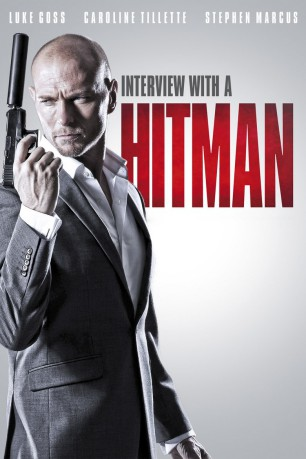

#1162 Interview with a Hitman
 
 IMDB-Wertung: 6.2 / 10
IMDB-Wertung: 6.2 / 10  Metascore: 0
Metascore: 0 
Im Vorstadtghetto von Bukarest lernt der kleine Victor früh, dass man sich von vermeintlich Großen nichts gefallen lassen darf. Sein Talent bleibt lokalen Gangstern nicht verborgen, und schon im Kindesalter begeht er seinen ersten Auftragsmord. Später wird Viktor vom Sohn des Boss in eine Intrige verwickelt und muss Rumänien den Rücken kehren. Auch in London stehen seine Künste hoch im Kurs, doch Viktor will nicht ewig Killer bleiben. Zumal er sich in eine schöne Frau verliebt. Da holt ihn die Vergangenheit an der Themse ein.
Jahr: 2012
Dauer: 96 Minuten
FSK: 16
Land: England Studio: EuroVideoTonspuren: DTS - ,
Untertitel:
Auflösung: 1080p (1920x1040) Größe: 6584 MB
Genre: Action, Thriller
Regisseur: Perry Bhandal
Drehbuch: Perry Bhandal
Soundtrack: Dan Teicher
Darsteller:
 Luke Goss als Viktor
Luke Goss als Viktor Caroline Tillette als Bethesda
Caroline Tillette als Bethesda Stephen Marcus als Traffikant
Stephen Marcus als Traffikant- Elliot Greene als Young Viktor
- Philip Whitchurch als Tosca
 Patrick Lyster als Xavier
Patrick Lyster als Xavier Ray Panthaki als Franco
Ray Panthaki als Franco Uriel Emil als Alexandru
Uriel Emil als Alexandru Branko Tomovic als Anatolie
Branko Tomovic als Anatolie- René Zagger als Cesar
 Adrian Bouchet als Brett
Adrian Bouchet als Brett Dermot Keaney als Kruchenko
Dermot Keaney als Kruchenko Christopher Sciueref als Vadim
Christopher Sciueref als Vadim- Louise Franklin als Roxy
- Drew Horsley als Raffa
 Marcello Walton als Tony
Marcello Walton als Tony Philip Arditti als Kovacs
Philip Arditti als Kovacs- Wayne Thompson als Henchman
- Danny Midwinter als Sergei
- Molly Harmon als Young Girl
- James Capel als David
- Jack McBride als Nathan
- Mark Burns als Gangster
- Naithen Calderwood als Bar Patron
- Rikki Chamberlain als Marku
- Dylan Edge als Pimp
- Joanna Holden als Helena
- Paul Knowles als Carl
- Ben Lucas als Steve the Barman
- Simon Manley als Henchman
- Emily Outred als Martha
- Lucy Scott-Smith als Angel
- Steven Charles Stobbs als Zoltar / The Man
- Steve Wraith als Rick
- Matthew Wynn als Anton
- Nicky Jean Wilson als Restaurant Patron , uncredited
Datei: X:\2012(G-M)\Interview with a Hitman (2012, FSK16, 1920x1040).mkv seit 29.05.2015
Festplatte: HD 2012(A-M)
 Es gibt insgesamt 112 Filme in der Gruppe '2012(G-M)'
Es gibt insgesamt 112 Filme in der Gruppe '2012(G-M)'